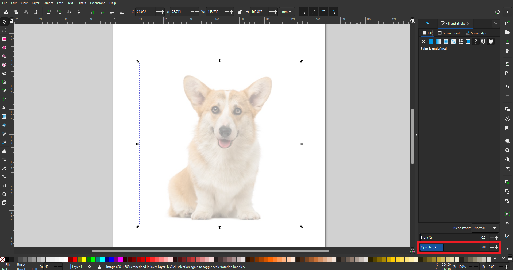
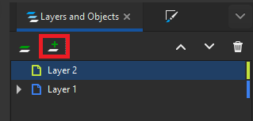
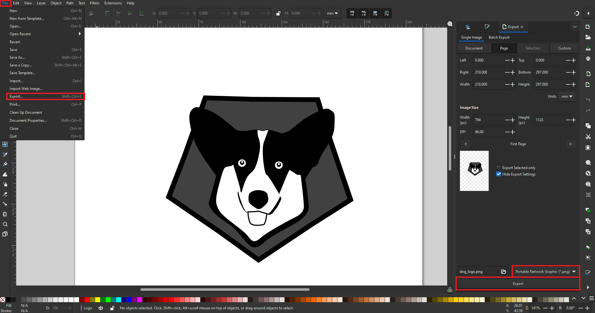

Vector Graphics
What is Vector Graphics?
It uses mathematical functions characterized by clean lines using file formats such as .dvg, .svg, .STEP. I will be using Inkscape a open source vector graphics editor used for artistic and technical illustrations like cartoons, clip art , logos and many more.
Converting Raster Image to a B&W Vector Logo
For this assignment, we were tasked to pick a animal image and convert it into a B&W vector logo.
I picked a dog because I love dogs so I found a corgi dog image because they are so cute to make a vector logo out of it:

Let's get Started!
We need to create a new document first in Inkscape. Afterwards drag the dog image into the new document.
After which you can move the image into the document page

{kind=link}
Then go to View > Zoom > Zoom 1:1 on the top left corner to zoom closer to the image.
{kind=link}
Now we can start drawing!
Click on the edit button to open Fill and Stroke and it should appear on the left side which you should have 2 tabs one for layers and the other Fill and Stroke.
{kind=link}
Bring the opacity of the image down abit by clicking the image and draging the opacity in Fill & Stroke tab.
{kind=link}
Create a new layer by clicking the '+' sign and put itt above the current layer.
{kind=link}
You can start tracing using the bevel tool. I start to trace out the nose first.
{kind=link}
Then using the select tool, select the object that you have traced and choose a color.

Making a new layer, I made the eyes using the circle tool and then coloring the eyes. You can also reorder the layer to overlay certain objects.
{kind=link}
Continue creating new layers and tracing the mouth and head of the dog. You can also rename the layers to the parts of the dogs eyes, nose and head.
{kind=link}
Once your done, create a new layer to make the shape for your logo. I used the polygon tool to make my logo
Then color your logo.

Once your done, you are ready to export your logo. Go to file > export and export it as png.
{kind=link}
And there you go this is the final product.
{kind=link}